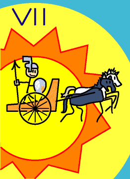

→
Damian Cugley →
Alleged Tarot 2002 →
png →
→
Damian Cugley →
Alleged Tarot 2002 →
png →
| « VI. The Lovers | VIII. Justice » | |
|  | ||
Upright: willpower, ambition
Reversed: aimlessness, selfishness, inner conflict
The chariot card shows a chariot drawn by two horses (or fabulous beasts if you prefer a more magical look). The person in the chariot is often shown armoured and without reins—the beasts are controlled by the will. Like the pillars in the picture of the Papess, the beasts are coloured black and white to represent the mysterious female principle and the transparent male principle. The figure in the chariot represents our sense of self or will, which must guide the course of the chariot no matter how the much the two horses want to take over and gallop off in random directions. Apparently this illustration of the will versus our baser natures goes all the way back to Plato. It can also be interpreted in terms of Freud’s model (the superego controlling the id and ego, or however it is supposed to work).
The helmet my charioteer is wearing is not from any particular historical period, although the chariot itself looks reasonably Roman or Greek. For no particular reason I have identified the chariot with Apollo’s (if the giant sun background is anything to go by). Since Apollo is god of reason and self-discipline, perhaps this is appropriate.
See also Thirteen’s description on the Aeclectic Tarot site
If your browser supports SVG, then you should visit the SVG version of this page. It is so much more cool!